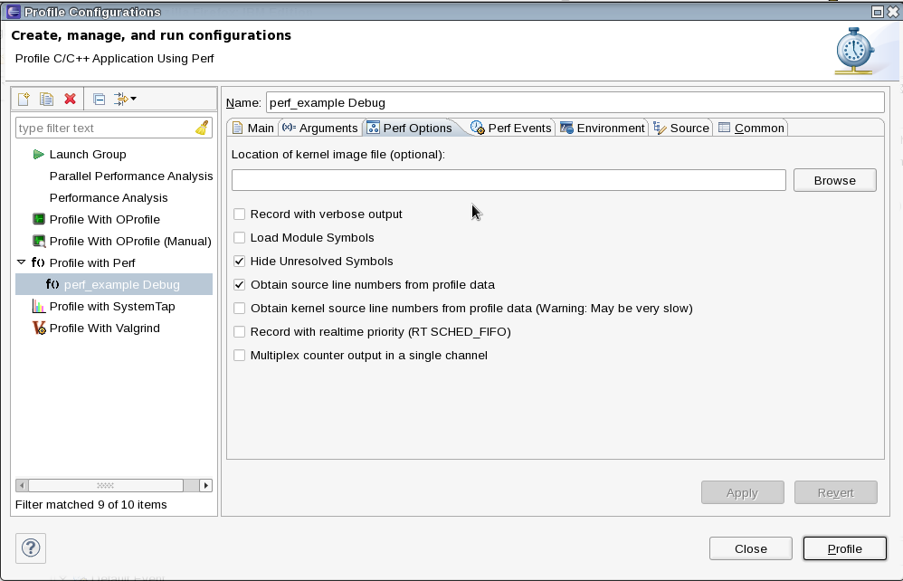
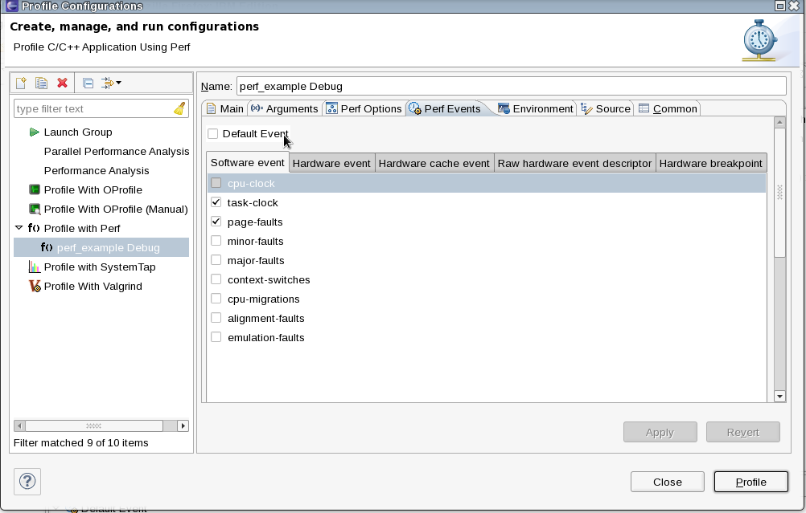

| Profiling Configuration | ||
|---|---|---|
|
|
|
|
| Launching a Profile | Perf Views | |
The Perf plug-in has several options to configure, most of them are mirrors of the configuration options that exists on the binary. For more information about all these options refer to the Perf man pages or https://perf.wiki.kernel.org/ .
It is possible to use RSE or RemoteTools to profile a remote project. In Profile Configurations, after creating a configuration in the Profile with Remote Perf option, it is necessary to search for the project binary. The user can copy the C/C++ executable file from the remote server to the local workstation by selecting the Copy C/C++ executable check box. But the default it to profile the executable file specified in the C/C++ executable field. In this case, you need to browse for the binary. The working directory is automatically set to the underlying project directory, but you can modify it if necessary.

This configuration tab contains runtime options for a profiling with Perf, such as loading a kernel image file or hide unsolved symbols.

On this tab it is possible to set up a customized array of events for the profiling or, if desired, go with the Default Event option which overrides all other settings and run Perf with the default event (cycle counting).

|
|

|
|
| Launching a Profile | Perf Views |